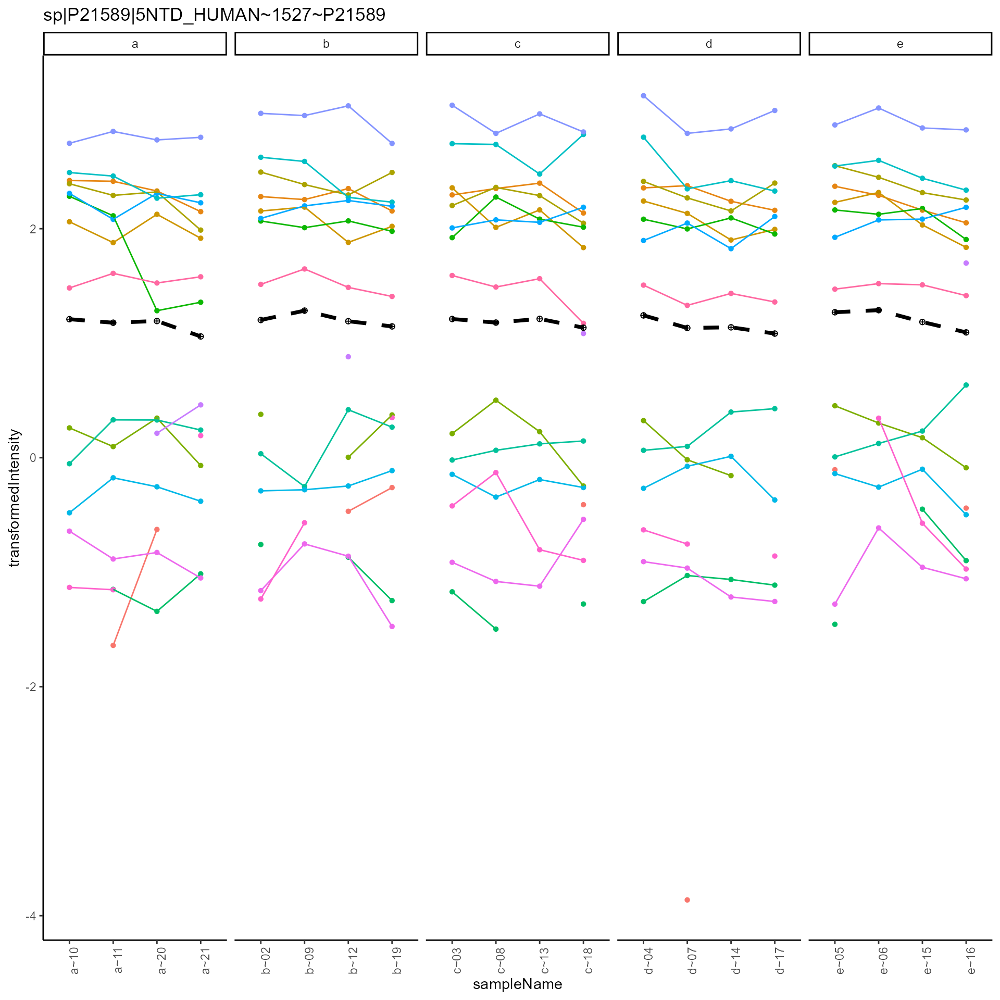
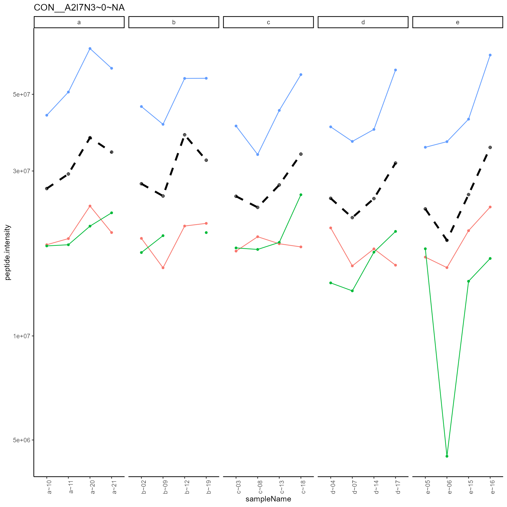

Proprocessing the Ionstar dataset
FGCZ - (Draft)
16 October, 2020
Source:vignettes/subsetNormalizationofIonstarData.Rmd
subsetNormalizationofIonstarData.RmdExample of subset normalization of the ionstar dataset.
Please download and install the prolfquaData package from github
rm(list = ls()) library(conflicted) library(LFQService) library(tidyverse) library(dplyr) conflict_prefer("filter", "dplyr")
We start by loading the IonStar dataset and the annotation from the prolfquaData package. The method add_annotation adds the annotation to the data.
datadir <- file.path(find.package("prolfquaData") , "quantdata") inputMQfile <- file.path(datadir, "MaxQuant_Ionstar2018_PXD003881.zip") inputAnnotation <- file.path(datadir, "annotation_Ionstar2018_PXD003881.xlsx") mqdata <- tidyMQ_Peptides_Config(inputMQfile) annotation <- readxl::read_xlsx(inputAnnotation) res <- add_annotation( mqdata$data, annotation, fileName = "raw.file" )
mqdata$config$table$factors[["dilution."]] = "sample" mqdata$config$table$factors[["run_Id"]] = "run_ID" mqdata$config$table$factorDepth <- 1 mqdata$data <- setup_analysis(res, mqdata$config)
datafilt <- LFQService::filter_proteins_by_peptide_count(mqdata$data, mqdata$config)$data
Create a sample N proteins to speed up computations.
N <- 200 set.seed(2020) hk <- mqdata$config$table$hkeysDepth() protein_Ids <- mqdata$data %>% select(all_of(hk)) %>% distinct() %>% sample_n(size = N)
Normalize data using HUMAN proteins only
lfqdata <- LFQData$new(datafilt, mqdata$config) tr <- lfqdata$get_Transformer() subset_h <- lfqdata$get_copy() subset_h$data <- subset_h$data %>% filter(grepl("HUMAN", protein_Id)) lfqdataNormalized <- tr$log2_robscale_subset(lfqsubset = subset_h)
The figures below show the intensity distribution before and after normalization.
before <- lfqdata$get_Plotter() before$intensity_distribution_density()

after <- lfqdataNormalized$get_Plotter() after$intensity_distribution_density()

Create result object for peptides
We collect all the relevant data for the Ionstar data in an R6 object.
IonstarData <- R6::R6Class( "IonstarData", public = list( data = NULL, config = NULL, data_N = NULL, config_N = NULL, initialize = function(data, config, data_N, config_N){ self$data = data self$config = config self$data_N = data_N self$config_N = config_N }, Pep = function(){ return(list(data = self$data, config = self$config$clone(deep = TRUE))) }, filtered = function(){ data <- LFQService:::filter_proteins_by_peptide_count( self$data , self$config )$data return(list(data = data, config = self$config$clone(deep = TRUE))) }, normalized = function(){ return(list(data = self$data_N, config = self$config_N)) }, subset_normalized = function(){ return(list(data = self$data_N, config = self$config_N)) } ) ) #lfqdata$data <- inner_join(protein_Ids, lfqdata$data) lfqdataNormalized$data <- inner_join(protein_Ids, lfqdataNormalized$data) mqdata$data <- inner_join(protein_Ids, mqdata$data) ionstar <- IonstarData$new(mqdata$data, lfqdata$config, lfqdataNormalized$data, lfqdataNormalized$config) usethis::use_data(ionstar, overwrite = TRUE)
Protein intensities
We will be using the LFQDataAggregator class. To estimate protein intensities using Tukey’s median polish we need to use normalized data. The figure below shows the the protein estimates (dashed line) and the peptide intensities.
lfqAggregator <- LFQDataAggregator$new(lfqdataNormalized, "protein") lfqAggregator$medpolish() xx <- lfqAggregator$plot() xx$plots[[1]]

dataIonstarProtein_subsetNorm <- list( data = lfqAggregator$lfq_agg$data, config = lfqAggregator$lfq_agg$config ) dataIonstarProtein_subsetNorm$data
## # A tibble: 3,260 x 7
## protein_Id sampleName dilution. run_Id raw.file isotope medpolish
## <chr> <chr> <chr> <chr> <chr> <chr> <dbl>
## 1 sp|P21589|5NT~ b~02 b 02 b03_02_150304_h~ light 1.20
## 2 sp|P21589|5NT~ c~03 c 03 b03_03_150304_h~ light 1.21
## 3 sp|P21589|5NT~ d~04 d 04 b03_04_150304_h~ light 1.24
## 4 sp|P21589|5NT~ e~05 e 05 b03_05_150304_h~ light 1.27
## 5 sp|P21589|5NT~ e~06 e 06 b03_06_150304_h~ light 1.29
## 6 sp|P21589|5NT~ d~07 d 07 b03_07_150304_h~ light 1.13
## 7 sp|P21589|5NT~ c~08 c 08 b03_08_150304_h~ light 1.18
## 8 sp|P21589|5NT~ b~09 b 09 b03_09_150304_h~ light 1.28
## 9 sp|P21589|5NT~ a~10 a 10 b03_10_150304_h~ light 1.21
## 10 sp|P21589|5NT~ a~11 a 11 b03_11_150304_h~ light 1.18
## # ... with 3,250 more rowsusethis::use_data(dataIonstarProtein_subsetNorm, overwrite = TRUE)
We can also estimate the protein intensities using the top N most abundant peptides. In this case we are using the untransformed protein intensities. The figure below shows the estimated protein intensities.
lfqAggregator <- LFQDataAggregator$new(lfqdata, "protein_topN") lfqAggregator$mean_topN() topN <- lfqAggregator$plot() topN$plots[[1]]
